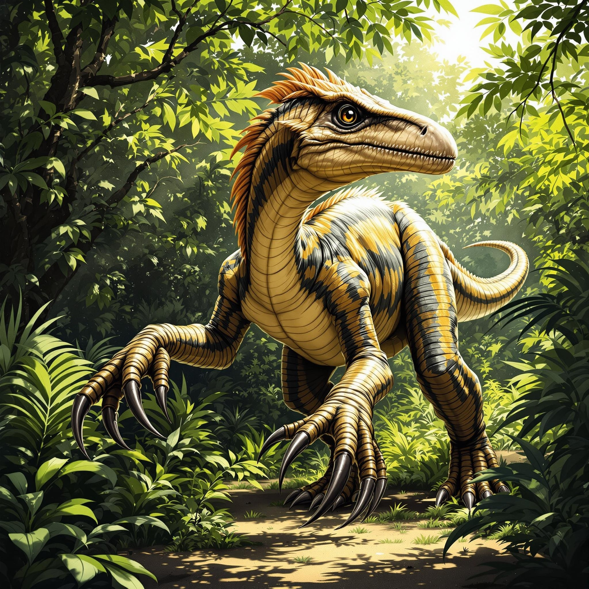

공룡 도감
모든 공룡들의 상세 정보
공룡 찾기 가이드
원하는 공룡을 쉽게 찾을 수 있도록 필터 시스템을 제공합니다:
- 분류, 시대, 특징, 생활방식 중 원하는 필터를 선택하세요.
- 선택한 필터는 상단에 태그로 표시됩니다.
- 필터를 선택하면 자동으로 해당하는 공룡들이 표시됩니다.
- 태그를 클릭하면 해당 필터가 해제됩니다.
- '필터 초기화' 버튼을 누르면 모든 필터가 해제되고 전체 목록이 표시됩니다.
여러 필터를 동시에 선택하면 모든 조건을 만족하는 공룡만 표시됩니다. (예: '초식공룡'과 '백악기'를 선택하면 백악기에 살았던 초식공룡만 표시)
분류
시대
특징
생활방식

브라키오사우루스
- 시대: 쥐라기 후기
- 크기: 키 13m
- 무게: 35-58톤

디플로도쿠스
- 시대: 쥐라기 후기
- 크기: 길이 24-27m
- 무게: 10-16톤

아르겐티노사우루스
- 시대: 백악기 초기
- 크기: 길이 30-40m
- 무게: 60-100톤

트리케라톱스
- 시대: 백악기 후기
- 크기: 길이 8-9m
- 무게: 6-12톤

스티라코사우루스
- 시대: 백악기 후기
- 크기: 길이 5.5m
- 무게: 3톤

파라사우롤로푸스
- 시대: 백악기 후기
- 크기: 길이 10m
- 무게: 2.5톤

코리토사우루스
- 시대: 백악기 후기
- 크기: 길이 9m
- 무게: 3-5톤

스테고사우루스
- 시대: 쥐라기 후기
- 크기: 길이 9m
- 무게: 5-7톤

티라노사우루스 렉스
- 시대: 백악기 후기
- 크기: 길이 12-14m
- 무게: 8-14톤

스피노사우루스
- 시대: 백악기 후기
- 크기: 길이 15-18m
- 무게: 7-20톤
- 특징: 등에 큰 돛 모양의 구조물을 가짐

벨로시랩터
- 시대: 백악기 후기
- 크기: 길이 2m
- 무게: 15kg
- 특징: 매우 빠르고 지능이 높은 소형 육식공룡

유타랩터
- 시대: 백악기 전기
- 크기: 길이 6m
- 무게: 500kg
- 특징: 가장 큰 랩터류 공룡

아크로칸토사우루스
- 시대: 백악기 전기
- 크기: 길이 11.5m
- 무게: 6톤
- 특징: 등에 높은 척추돌기를 가진 대형 육식공룡

데이노니쿠스
- 시대: 백악기 전기
- 크기: 길이 3m
- 무게: 70kg
- 특징: 발톱이 매우 발달된 중형 랩터

메갈로사우루스
- 시대: 쥐라기 중기
- 크기: 길이 6m
- 무게: 1톤
- 특징: 최초로 발견된 공룡 중 하나

시조새
- 시대: 쥐라기 후기
- 크기: 길이 0.5m
- 무게: 0.5kg
- 특징: 공룡과 조류의 중간 형태

아트락토스토무스
- 시대: 백악기 후기
- 크기: 길이 5m
- 무게: 500kg
- 특징: 악어와 유사한 체형

샤스타사우루스
- 시대: 트라이아스기 후기
- 크기: 길이 3m
- 무게: 150kg
- 특징: 물고기와 유사한 체형

마멘키사우루스
- 시대: 쥐라기 후기
- 크기: 길이 26m
- 무게: 25톤
- 특징: 가장 긴 목을 가진 공룡 중 하나

파타고타이탄
- 시대: 백악기 중기
- 크기: 길이 37m
- 무게: 69톤
- 특징: 현재까지 발견된 가장 큰 육상동물

토로사우루스
- 시대: 백악기 후기
- 크기: 길이 8m
- 무게: 4톤
- 특징: 트리케라톱스와 유사하지만 더 큰 뿔 프릴을 가짐

케라토사우루스
- 시대: 백악기 초기
- 크기: 길이 6m
- 무게: 2톤
- 특징: 코 위에 특징적인 뿔을 가짐

에드몬토사우루스
- 시대: 백악기 후기
- 크기: 길이 13m
- 무게: 4톤
- 특징: 대규모 무리를 이루어 생활

사우롤로푸스
- 시대: 백악기 후기
- 크기: 길이 12m
- 무게: 3톤
- 특징: 머리 위의 관으로 소리를 냄

노도사우루스
- 시대: 백악기 중기
- 크기: 길이 6m
- 무게: 1.5톤
- 특징: 전신을 덮는 갑옷 같은 비늘

사우로펠타
- 시대: 백악기 초기
- 크기: 길이 5m
- 무게: 2톤
- 특징: 등과 옆구리에 날카로운 가시

보레알로펠타
- 시대: 백악기 초기
- 크기: 길이 6.5m
- 무게: 1.5톤
- 특징: 2017년 새로 발견된 잘 보존된 화석

데이노케이루스
- 시대: 백악기 후기
- 크기: 길이 11m
- 무게: 6.4톤
- 특징: 매우 긴 팔을 가진 특이한 형태

테논토사우루스
- 시대: 백악기 초기
- 크기: 길이 6.5m
- 무게: 1톤
- 특징: 빠른 주행 능력을 가진 중형 초식공룡

케찰코아틀루스
- 시대: 백악기 후기
- 날개 폭: 10-11m
- 무게: 70-250kg
- 특징: 역사상 가장 큰 비행 동물

프테라노돈
- 시대: 백악기 후기
- 날개 폭: 7m
- 무게: 20-30kg
- 특징: 두개골 뒤로 긴 돌기가 있음

미크로랩터
- 시대: 백악기 전기
- 크기: 길이 0.77m
- 무게: 1kg
- 특징: 네 개의 날개를 가진 작은 공룡

하체고프테릭스
- 시대: 백악기 후기
- 날개 폭: 10-12m
- 무게: 200-250kg
- 특징: 케찰코아틀루스와 비슷한 크기의 거대 비행 파충류

모사사우루스
- 시대: 백악기 후기
- 크기: 길이 15-18m
- 무게: 15-20톤
- 특징: 백악기 바다의 최상위 포식자

플레시오사우루스
- 시대: 쥐라기-백악기
- 크기: 길이 3-5m
- 무게: 1-2톤
- 특징: 매우 긴 목을 가진 해양 파충류

익티오사우루스
- 시대: 트라이아스기 후기
- 크기: 길이 2-4m
- 무게: 200-400kg
- 특징: 돌고래와 유사한 체형
아트락토스토무스
- 시대: 백악기 후기
- 크기: 길이 5m
- 무게: 500kg
- 특징: 악어와 유사한 체형
샤스타사우루스
- 시대: 트라이아스기 후기
- 크기: 길이 3m
- 무게: 150kg
- 특징: 물고기와 유사한 체형

델타드로메우스
- 시대 백악기 후기 (9,500만 년 전)
- 크기 길이 8m
- 체중 2톤
- 특징 긴 다리와 날렵한 체형

마중가사우루스
- 시대 백악기 후기 (7천만 년 전)
- 크기 길이 6-7m
- 체중 1.1톤
- 특징 두꺼운 머리와 짧은 뿔

수코미무스
- 시대 백악기 초기 (1억 1천만 년 전)
- 크기 길이 11m
- 체중 2.5-5.2톤
- 특징 악어와 비슷한 긴 주둥이

타페자라
- 시대 백악기 초기 (1억 1천만 년 전)
- 날개 폭 5-6m
- 체중 20-25kg
- 특징 큰 머리 볏

닥틸링쿠스
- 시대 쥐라기 후기 (1억 5천만 년 전)
- 날개 폭 4-5m
- 체중 10-15kg
- 특징 긴 부리와 날렵한 체형

익티오르니스
- 시대 백악기 후기 (8,700만 년 전)
- 날개 폭 50cm
- 체중 0.5-1kg
- 특징 현대 새와 유사한 구조